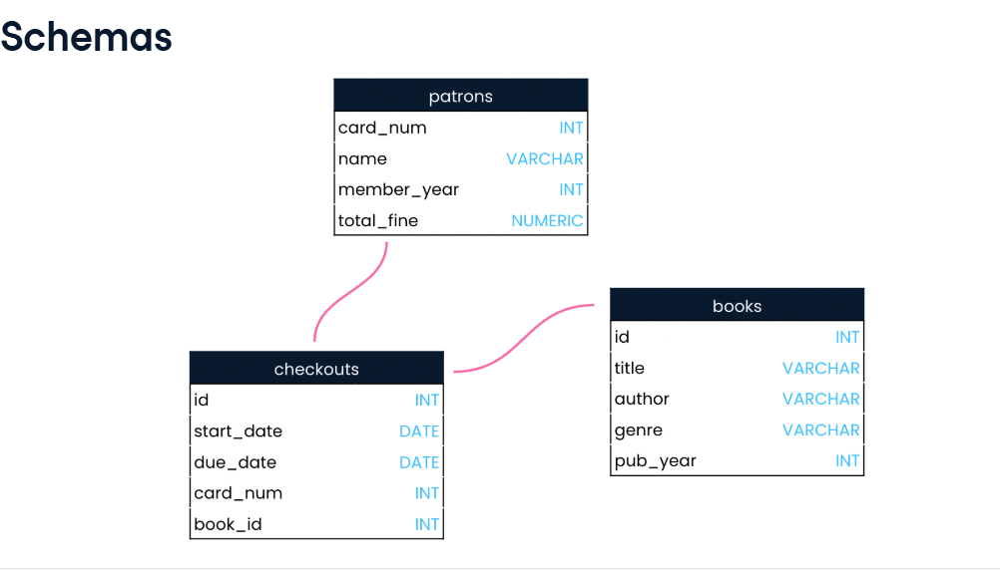
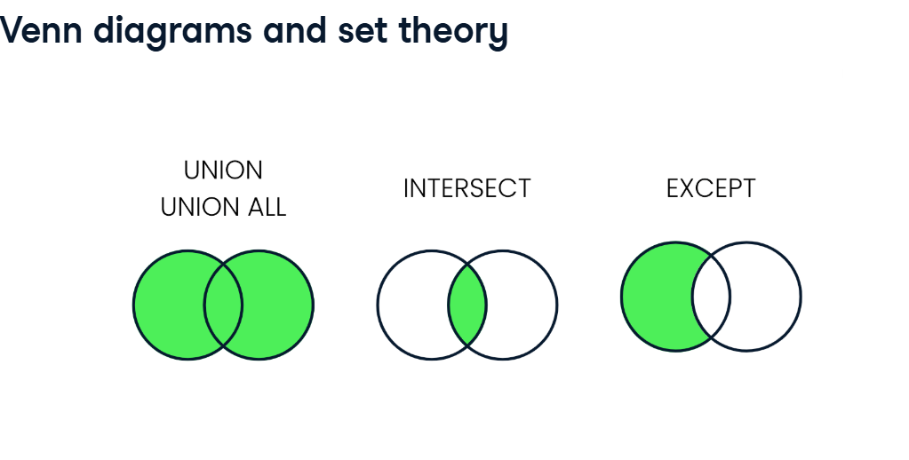
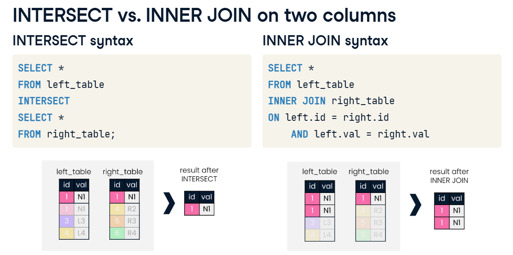

The SQL Cheat Sheet
The following overview is based on several datacamp courses and own research.
SQL Basics
Definition: A relational database defines relationships between tables of data inside the database.
Possibly the biggest advantage of a database is that many users can write queries to gather insights from the data at the same time. When a database is queried, the data stored inside the database does not change: rather, the database information is accessed and presented according to instructions in the query.
SQL, or S-Q-L, is short for Structured Query Language. It is the most widely used programming language for creating, querying, and updating relational databases.
rows = records holds data of an individual observation
column = fields holds one piece of information about all records, same data type in one field like number, text or date for example. We use data types for several reasons. First, different types of data are stored differently and take up different amounts of storage space. Second, some operations only apply to certain data types. It makes sense to multiply a number by another number, but it does not make sense to multiply text by other text for example. Types are string, integers or floats. The NUMERIC data type can store floats which have up to 38 digits total - including those before and after the decimal point.
unique identifier (“key”), identify records in a table to identify this record, often a number, often at the leftest of the table
query request from data from a database.
schema (“blue prints”), shows a database’s design, such as what tables are included in the database and any relationships between its tables. A schema also lets the reader know what data type each field can hold.

Good table names manners table name: lowercase,no spaces _ instead, plural or collective group name
field name: lowercase, no spaces, singular, unique in a table.
Having more tables, each with a clearly marked subject, is generally better than having fewer tables where information about multiple subjects is combined.
Key words
Keywords are reserved words used to indicate what operation we’d like our code to perform.
SELECT keyword indicates which fields should be selected - in this case, the name field.
FROM keyword indicates the table in which these fields are located - in this case, the patrons table.
End the query with a ; to indicate it is compete
SELECT field_name1,field_name2,fieldname_n
FROM table_name;results called result set, lists all the column information from one table. The sorting of field names does not change the sorting in the results.
If we want all field names of a table we can use *
SQL flavors
SQL has a few different versions, or flavors. Some are free, while others have customer support and are made to complement major databases such as Microsoft’s SQL Server or Oracle Database, which are used by many companies. All SQL flavors are used with table-based relational databases like the ones we’ve seen, and the vast majority of keywords are shared between them! In fact, all SQL flavors must follow universal standards set by the International Organization for Standards and the American National Standards Institute. Only additional features on top of these standards result in different SQL flavors. Think of SQL flavors as dialects of the same language.
Most popular
PstgreSQL
- free & open source, created by University of California - The name “PostgreSQL” is used to refer to both the database system itself as well as the SQL flavor used with it. SQL Server - free and paid versions - SQL Server is also a relational database system which comes in both free and enterprise versions. It was created by Microsoft, so it pairs well with other Microsoft products. T-SQL is Microsoft’s proprietary flavor of SQL, used with SQL Server databases.
Limit records
Limits the records, that are shown.
In PostgreSQL: SELECT field_name1,field_name2 FROM table_name LIMIT number_records;
In SQL Server: SELECT TOP(2) field_name1, field_name2 FROM table_name;
Quering databases
Formating
SQL is a generous language when it comes to formatting. New lines, capitalization, and indentation are not required in SQL as they sometimes are in other programming languages. Although, formating is useful to make code more readible and debug it easier. While keyword capitalization and new lines are standard practice, many of the finer details of SQL style are not. For instance, some SQL users prefer to create a new line and indent each selected field when a query selects multiple fields, as the query on this slide does. Because of different styles follow a style guide.
Sometimes field names not follows the style guide. If you want to refer to a fieldname with for example a spaces in it use double-quotes.
SELECT "release date"
FROM films;Order of execution
Unlike many programming languages, SQL code is not processed in the order it is written.
Step 1: FROM
Step 2: INNER JOIN, LEFT JOIN, RIGHT JOIN
Step 3: WHERE (filter without aggregate function, only for individuals)
STEP 4: SELECT (aliases are defined here), (arethmetic is included here), (round is included here)
STEP 5: GROUP BY
Step 6: HAVING (filter for grouped records)
STEP 7: ORDER BY (only here alias assigned in Step 3 can be used!)
STEP 8: LIMITAliasing
Sometimes it can be helpful to rename columns in our result set, whether for clarity or brevity. We can do this using aliasing. Therefore we can use AS. So, if we want to rename the first column_name in our result set we type:
SELECT field_name1 AS new_name, field_name2, field_name
FROM table_name;Attention! Does not change the name in the original table, only in the result table!
Get only distinct values as a result
If you only want unique values of a column, type:
SELECT DISTINCT field_name1
FROM table_name;Also applies for several fields, maybe if you want to investigate which department appoint new employees in which year. In consequence, you only get unique combinations!
SELECT DISTINCT field_name1, field_name2
FROM table_name;View
View refers to a table that is the result of a saved SQL SELECT statement. Views are considered virtual tables, which means that the data a view contains is not generally stored in the database. Rather, it is the query code that is stored for future use. A benefit of this is that whenever the view is accessed, it automatically updates the query results to account for any updates to the underlying database. To create a view, we’ll add a line of code before the SELECT`statement:CREATE VIEW, then the name we'd like for the new view, then theAS` keyword to assign the results of the query to the new view name.
CREATE VIEW view_name AS
SELECT field_name1, field_name2
FROM table_name;There is no result set when creating a view. Once a view is created, however, we can query it just as we would a normal table by selecting FROM the view.
- Using views
View the results you’ve created with
SELECT * FROM view_name;Count
The COUNT function lets us do this by returning the number of records with a value in a field.
#How many records of birthdates are in the table people?
SELECT COUNT (birtdates) AS count_birthdates
FROM people;
#for more than one field, count the number of birthdates and the number of names
SELECT COUNT(name) AS count_names, COUNT(birthdate) AS count_birthdates
FROM people;
# get the number of records from a table
SELECT COUNT(*) AS total_records
FROM people;Often, our results will include duplicates. We can use the DISTINCT keyword to select all the unique values from a field.
#get unique values in a field, how many unique languages are in the films table?
SELECT DISTINCT language
FROM films;
#or use COUNT instead for get the number of distinct birthdates in a table
SELECT COUNT(DISTINCT birthdate) AS count_dis_birth
FROM people;Filter with WHERE
Use the keyword WHERE to filter records which met certain conditions.
For numbers use the following operators:
#for all titles with a release year SMALLER THAN 1960
SELECT title
FROM films
WHERE release_year < 1960;
# for all GREATER THAN or EQUAL TO
SELECT title
FROM films
WHERE release_year >= 1960;
#for a SPECIFIC year
SELECT title
FROM films
WHERE release_year = 1960;
# for all films EXCEPT 1960, NOT EQUAL TO
SELECT title
FROM films
WHERE release_year <> 1960;For strings use single-quotes:
#for all titles that have been created in Japan
SELECT title
FROM films
WHERE country = 'Japan';If we want to combine WHERE with other key words, this is the order:
#for all titles that have been created in Japan
SELECT title
FROM films
WHERE country = 'Japan'
LIMIT 5;More than one condition:
# one AND another conditions
SELECT title
FROM films
WHERE country = 'Japan' AND release_year <> 1960;
# one OR another condition is true
SELECT title
FROM films
WHERE country = 'Japan' OR release_year <> 1960;
# records are BETWEEN a range of numbers
SELECT title
FROM films
WHERE release_year BETWEEN 1966 AND 1988;
# BETWEEN works inclusive, means its the same as the following
SELECT TITLE
FROM films
WHERE release_year >= 1994
AND release_year <= 2000';
# combine OR and AND
SELECT title
FROM films
WHERE (release_year <> 1960 OR release_year <> 1961)
AND (certification= 'PG' OR ceritifcation = 'R');What if we are not interested that a string matches a specific word, but a pattern? We can look for this with LIKE, NOT LIKE. Therefore we use wildcards. % match zero, one or many characters. _ match a single character.
#get all names, which started with Ad
SELECT name
FROM people
WHERE name LIKE 'Ad%';
#get all names, which started with Ev and has only three letters
SELECT name
FROM people
WHERE name LIKE 'Ev_';
#NOT LIKE is the inversion of LIKE, so it gives all records that not have a 'von' in its name
SELECT name
FROM people
WHERE name NOT LIKE '%von%;
# its also possible to combine the wildcards, so in a case where we want to get all names, where a 'ma' comes in the third position
SELECT name
FROM people
WHERE name NOT LIKE '__ma%';What if we want to filter based on many conditions or a range of numbers? Then, we can use the IN operator, which allows us to specify multiple values in a WHERE clause, making it easier and quicker to set numerous OR conditions.
#get all films from 1920, 1930 or 1940
SELECT title
FROM films
WHERE release_year IN (1920,1930,1940);
#its the same as this but way easier:
SELECT title
FROM films
WHERE release_year=1920
OR release_year=1930
OR release_year=1940;
#also possible for strings
SELECT title
FROM films
WHERE country IN ('Germany', 'France');Missing values
When we were learning how to use the COUNT keyword, we learned that we could include or exclude non-missing values depending on whether or not we use the asterisk in our query. But what is a missing or non-missing value? In SQL, null represents a missing or unknown value. COUNT(*) counts all records including missing values. Pay attention! COUNT(field_name counts only all given values and filter out the missings. Hence, we don’t want to jump to false conclusions, its important to access, how much data is missing. Thus, we add IS NULL to the WHERE clause. Often we want to filter out missing values. Therefore we can use IS NOT NULL.
# how many birthdates are missing in the data base?
SELECT COUNT(*) AS no_birthdates
FROM people
WHERE birthdate IS NULL;
# if we want to filter out missing values for our counting
SELECT COUNT(*) AS birthdates_yes
FROM people
WHERE birthdate IS NOT NULL;
# we can also filter out all null values in specifying our count
SELECT COUNT(birthdates) AS birthdates_yes
FROM people; Aggregate Functions
We already know one aggregate function, COUNT()! We’ll now learn four new aggregate functions, allowing us to find the average, sum, minimum, and maximum of a specified field, not records!
for numeric SUM() gives the sum AVG() gives the average
For various data types
COUNT() count the given values, can provide a total of any non-missing, or not null, records in a field regardless of their type.
MIN() gives the minimum or MAX() gives the maximum, similarly, minimum and maximum will give the record that is figuratively the lowest or highest. Lowest can mean the letter A when dealing with strings or the earliest date when dealing with dates. And, of course, with numbers, it is the highest or the lowest number.
Best practice is to use an alias Notice how all query results have automatically updated the field name to the function. In this case, min. It’s best practice to use an alias when summarizing data so that our results are clear to anyone reading our code.
#for numeric data find the total duration of all films
SELECT SUM(duration) AS total_duration
FROM films
#find the shortest film
SELECT (duration) AS shortest_film
FROM films;Combine aggregate functions with the WHERE clause
We can combine aggregate functions with the WHERE clause to gain further insights from our data. That’s because the WHERE clause executes before the SELECT statement. For example, to get the average budget of movies made in 2010 or later, we would select the average of the budget field from the films table where the release year is greater than or equal to 2010.
#get the minimum budget for all films released in 2010.
SELECT MIN (budget) AS min_budget
FROM films
WHERE release_year =2010;
#also possible with count, how many given values (not missing) do we have for film budgets, where films have been released in 2010?
SELECT COUNT(budget) AS count_budget
FROM films
WHERE release_year = 2010;
#you can also have more than one aggregate function applied
#Modify the query to also list the average budget and average gross
SELECT release_year,AVG(budget) AS avg_budget, AVG(gross) AS avg_gross
FROM films
WHERE release_year > 1990Round
In SQL, we can use ROUND() to round our number to a specified decimal. There are two parameters for ROUND(): the number we want to round and the decimal place we want to round to. ROUND(number_to_round, decimal_places). decimal_places are optional. If no value is given, it treats the key word like you assigned a zero and it is rounded to a whole number. Using negative five as the decimal place parameter will cause the function to round to the hundred thousand or five places to the left. ROUND() can only be used with numerical fields.
#let's round the average with 2 decimal places
SELECT ROUND(AVG(budget),2) AS avg_budget
FROM films
WHERE release_year = 2010;Arithmetic
We can perform basic arithmetic with symbols like plus, minus, multiply, and divide. Using parentheses with arithmetic indicates to the processor when the calculation needs to execute.
Similar to other programming languages, SQL assumes that we want to get an integer back if we divide an integer by an integer. So be careful! When dividing, we can add decimal places to our numbers if we want more precision.
#only get a whole number
SELECT(4/3);
#get one decimal place
SELECT(4.0/3.0);What’s the difference between using aggregate functions and arithmetic? The key difference is that aggregate functions, like SUM, perform their operations on the fields vertically while arithmetic adds up the records horizontally. Notice that the query’s result doesn’t give us a defined field name. We will always need to use an alias when summarizing data with aggregate functions and arithmetic.
# what is the gap between what a movie has made and a movie had cost?
SELECT (gross-budget) AS profit
FROM films;
Examples.
#Round duration_hours to two decimal places
SELECT title, ROUND(duration / 60.0, 2) AS duration_hours
FROM films;Sorting results
Sorting results means we want to put our data in a specific order. It’s another way to make our data easier to understand by quickly seeing it in a sequence. Therefore, use ORDER BY. It will sort in ascending order by default (small to high number, number or special signs to A to Z). If you want to change the order to descending, than use DESC after the field name. When used on its own, itws written after the FROM statement. Attention! For numbers null / a missing value is the highest one. So you need to add a WHERE clause.
Notice that we don’t have to select the field we are sorting on. For example, here’s a query where we sort by release year and only look at the title. However, it is a good idea to include the field we are sorting on in the SELECT statement for clarity.
#get all titles and budgets, sorted descending by budget
SELECT title, budget
FROM films
ORDER BY budget DESC;
#without missing values
SELECT title, budget
FROM films
WHERE budget IS NOT NULL
ORDER BY budget DESC;ORDER BY can also be used to sort on multiple fields. It will sort by the first field specified, then sort by the next, etc. To specify multiple fields, we separate the field names with a comma. The second field we sort by can be thought of as a tie-breaker when the first field is not decisive in telling the order.
# what are the best movies? First sort by oscar wins. this is not sufficient, because several movies have won same often an oscar. Therefore, use the imdb score as a tie-breaker
SELECT title, wins
FROM best_movies
WHERE budget IS NOT NULL
ORDER BY wins DESC, imdb_score DESC;
# its also possible to select different orders for each field we are sorting.
SELECT birthdate, name
FROM people
ORDER BY birthdate, name DESC;Grouping results
Group with GROUP BY. It is commonly used with aggregate functions to provide summary statistics, particularly when only grouping a single field, certification, and selecting multiple fields, certification and title. This is because the aggregate function will reduce the non-grouped field to one record only, which will need to correspond to one group.
SQL will return an error if we try to SELECT a field that is not in our GROUP BY clause. We’ll need to correct this by adding an aggregate function around title.
We can use GROUP BY on multiple fields similar to ORDER BY. The order in which we write the fields affects how the data is grouped. The query here selects and groups certification and language while aggregating the title. The result shows that we have five films that have missing values for both certification and language, two films that are unrated and in Japanese, two films that are rated R and in Norwegian, and so on.
# Example with COUNT
SELECT certification, language, COUNT(title) AS title_count
FROM films
GROUP BY certification, language;
#Example with AVG
SELECT release_year, AVG(duration) AS avg_duration
FROM films
GROUP BY release_year;
Combine grouping and sorting
We can combine GROUP BY with ORDER BY to group our results, make a calculation, and then order our results.
#which release year has the highest language diversity?
SELECT release_year, COUNT(DISTINCT language) AS year_diversity
FROM films
GROUP BY release_year
ORDER BY year_diversity DESC;Filter with HAVING
We’ve combined sorting and grouping; next, we will combine filtering with grouping. In SQL, we can’t filter aggregate functions with WHERE clauses. The reason why groups have their own keyword for filtering comes down to the order of execution. WHERE filters individual records while HAVING filters grouped records.
# in what years was the average duration time above 2 hours?
SELECT release_year
FROM films
GROUP BY release_year
HAVING AVG(duration > 120);
#get the country with the distinct certification count greater than 10
SELECT country, COUNT(DISTINCT(certification)) AS certification_count
FROM films
GROUP BY country
HAVING COUNT(DISTINCT(certification)) > 10;Join Data
Tables can have different relationsships to each other.
The first type of relationship we’ll talk about is a one-to-many relationship. This is the most common type of relationship, one where a single entity can be associated with several entities. Think about a music library. One artist can produce many songs over their career. This is a one-to-many relationship. The same applies for authors and their books, directors and movie titles, and so on.
A second type of relationship is a one-to-one relationship. One-to-one relationships imply unique pairings between entities and are therefore less common. A commonly held premise of forensic science is that no two fingerprints are identical, and therefore that a particular fingerprint can only be generated by one person. This is an example of a one-to-one relationship: one fingerprint for one finger.
The last type of relationship we’ll discuss is a many-to-many relationship. An example of this is languages and countries. Here we show the official languages of Germany, Belgium and the Netherlands, where we see that many languages can be spoken in many countries. For example, Belgium has three official languages: French, German, and Dutch. Conversely, languages can be official in many countries: Dutch is an official language of both the Netherlands and Belgium, but not Germany.
With SQL joins, you can join on a key field, or any other field.
Inner join
– is for adding fields together –
The INNER JOIN shown looks for records in both tables with the same values in the key field, id. Arrows indicate records where the id matches. The new created table from INNER JOIN only contains records with the same values in the key field from the former tables.
# define the fields from both tables that we want to have in our output table
SELECT table_1.field_1, table1.field_2, table.2_field_3, table.2_field_4
# table, to which data should be added
FROM table_1
INNER JOIN tabel_2
# define the key field, in which the same values should be given
ON table_1.keyfield = table_2.keyfield;In our INNER JOIN, we’ve had to type out “table_1” and “table_2” several times. Luckily, we can alias table names using the same AS keyword used to alias column names. If the key field is named the same in both tables, we can use USING.
# define the fields from both tables that we want to have in our output table
SELECT t1.field_1, t1.field_2, t2_field_3, t2_field_4
# table, to which data should be added
FROM table_1 AS t1
# table from which data should be added
INNER JOIN table_2 AS t2
# define the key field, in which the same values should be given
USING (key_field);
#Example
-- Select fields with aliases
SELECT c.code AS country_code, c.name,e.year, e.inflation_rate
FROM countries AS c
-- Join to economies (alias e)
INNER JOIN economies AS e
-- Match on code field using table aliases
ON c.code = e.code;A powerful feature of SQL is that multiple joins can be combined and run in a single query. Let’s have a look at some syntax for multiple joins. We begin with the same INNER JOIN as before, and then chain another INNER JOIN to the result of our first INNER JOIN. Notice that we use left_table.id in the last line of this example. If we want to perform the second join using the id field of right_table rather than left_table, we can replace left_table.id with right_table.id in the final line. Only records will be in the output where the same value in the key field is given in all joined tables.
# SYNTAX
SELECT *
FROM left_table
INNER JOIN right_table
ON left_table.key = righ_table.key
INNER JOIN next_table
ON left_table_.key/ right_table.key = next_table.key
# works also with using, here's an example
SELECT p1.country, p1.continent,president, prime_minister,pm_start
FROM prime_ministers AS p1
# second table
INNER JOIN presidents AS p2
#key word for first inner join
USING (country)
# third table
INNER JOIN prime_minister_terms AS p3
#key word for second inner join
USING (prime_minister);What if we want to inner join fields by multiple keywords? We can limit the records returned by supplying an additional field to join on by adding the AND keyword to our ON clause. In the following example we join on date, a frequently used second column when joining on multiple fields. The result set now contains records that match on both id AND date.
# SYNTAX
SELECT *
FROM left_table
INNER JOIN right_table
ON left_table.key = right_table.key
INNER JOIN next_table
ON left_table_.key/ right_table.key = next_table.key
AND left_table.key2 / right_table.key2 = next.table.key2Outer joins
Outer joins can obtain records from other tables, even if matches are not found for the field being joined on.
A LEFT JOIN will return all records in the left_table, and those records in the right_table that match on the joining field provided. Records that are only in the right table provided will faded out. For records, that only appear in the left table, the missing values are set to null in the joined table. LEFT JOIN can also be written as LEFT OUTER JOIN.
# SYNTAX
SELECT p1.country, prime_minister, president
FROM prime_ministers AS p1
LEFT JOIN presidents AS p2
USING (country);RIGHT JOINis the second type of outer join, and is much less common than LEFT JOIN so we won’t spend as much time on it here. Instead of matching entries in the id column of the left table to the id column of the right table, a RIGHT JOIN does the reverse. All records are retained from right_table, even when id doesn’t find a corresponding match in left_table. Null values are returned for the left_value field in records that do not find a match.
# SYNTAX
SELECT *
FROM left_table
LEFT JOIN right table
ON left_table_key = right_table_key; Full join
A FULL JOIN combines a LEFT JOIN and a RIGHT JOIN. As you can see in this diagram, no values are faded out as they were in earlier diagrams. This is because the FULL JOIN will return all ids, irrespective of whether they have a match in the other table being joined. Note that this time, nulls can appear in either left_value or right_value fields. Note that the keyword FULL OUTER JOIN can also be used to return the same result.
# SYNTAX
SELECT left_table_id AS l_id, right_table_id, AS r_idf, left_table_val AS l_val, right_table_val AS r?val
FROM left_table
FULL JOIN right table
USING id;Crossing
CROSS JOINs are slightly different than joins we have seen previously: they create all possible combinations of two tables. Let’s explore the diagram for a CROSS JOIN. In this diagram we have two tables named table1 and table2, with one field each: id1 and id2, respectively. The result of the CROSS JOINis all nine combinations of the id values of 1, 2, and 3 in table1 with the id values of A, B, and C for table2.
# SYNTAX
SELECT field1, field2
FROM table 1
CROSS JOIN table 2;Self join
Self joins are used to compare values from part of a table to other values from within the same table. Self joins don’t have dedicated syntax as other joins we have seen do. We can’t just write SELF JOIN in SQL code, for example.
In addition, aliasing is required for a self join. Let’s look at a chunk of INNER JOIN code using the prime_ministers table. The country column is selected twice, and so is the continent column. The prime_ministers table is on both the left and the right of the JOIN, making this both a self join and an INNER JOIN! The vital step here is setting the joining fields which we use to match the table to itself. For each country, we will find multiple matched countries in the right table, since we are joining on continent. Each of these matched countries will be returned as pairs. Since this query will return several records, we use LIMIT to return only the first 10 records.
# SYNTAX
SELECT p1.country AS country1, p2.country AS country2, p1.continent
FROM prime_ministers AS p1
INNER JOIN prime_minister AS p2
ON p1.continent = p2.continent
LIMIT 10;The results are a pairing of each country with every other country in the same continent. However, note that our join also paired countries with themselves, since they too are in the same continent as themselves. We don’t want to include these, since a leader from Portugal does not need to meet with themselves, for example. Let’s fix this. Recall the use of the AND clause to ensure multiple conditions are met in the ON clause. In our second condition, we use the not equal to operator to exclude records where the p1-dot-country and p2-dot-country fields are identical.
# SYNTAX
SELECT p1.country AS country1, p2.country AS country2, p1.continent
FROM prime_ministers AS p1
INNER JOIN prime_minister AS p2
ON p1.continent = p2.continent
# not equal to
AND p1.continent <> p2.continent
LIMIT 10;Set Operations
SQL has three main set operations, UNION, INTERSECT and EXCEPT. The Venn diagrams shown visualize the differences between them. We can think of each circle as representing a table. The green parts represent what is included after the set operation is performed on each pair of tables.

Union and Union all
– is for adding records together –
In SQL, the UNION operator takes two tables as input, and returns all records from both tables. The diagram shows two tables: left and right, and performing a UNION returns all records in each table. If two records are identical, UNION only returns them once. In SQL, there is a further operator for unions called UNION ALL. In contrast to UNION, given the same two tables, UNION ALL will include duplicate records.
# SYNTAX
SELECT t1.field1, t2.field2
FROM table_1 AS t1
UNION
SELECT t1.field1, t2.field2
FROM table_2 AS t2;For all set operations, the number of selected columns and their respective data types must be identical. For instance, we can’t stack a number field on top of a character field. The result will only use field names (or aliases, if used) of the first SELECT statement in the query.
Intersect
INTERSECT takes two tables as input, and returns only the records that exist in both tables.
# SYNTAX
SELECT t1.field1, t2.field2
FROM table_1 AS t1
INTERSECT
SELECT t1.field1, t2.field2
FROM table_2 AS t2;Let’s compare INTERSECT to performing an INNER JOIN on two fields with identical field names. Similar to UNION, for a record to be returned, INTERSECT requires all fields to match, since in set operations we do not specify any fields to match on. This is also why it requires the left and right table to have the same number of columns in order to compare records. In the figure shown, only records where both columns match are returned. In NNER JOIN, similar to INTERSECT, only results where both fields match are returned. INNER JOIN will return duplicate values, whereas INTERSECT will only return common records once. As we know from earlier lessons, INNER JOIN will add more columns to the result set.

Except
EXCEPT allows us to identify the records that are present in one table, but not the other. More specifically, it retains only records from the left table that are not present in the right table.
# SYNTAX
SELECT t1.field1, t2.field2
FROM table_1 AS t1
EXCEPT
SELECT t1.field1, t2.field2
FROM table_2 AS t2;Data manipulation
CASE statements are SQL’s version of an “IF this THEN that” statement. Case statements have three parts – a WHEN clause, a THEN clause, and anELSE clause. The first part – the WHEN clause – tests a given condition, say, x = 1. If this condition is TRUE, it returns the item you specify after your THEN clause. You can create multiple conditions by listing WHEN and THEN statements within the same CASE statement. The CASE statement is then ended with an ELSE clause that returns a specified value if all of your when statements are not true. When you have completed your statement, be sure to include the term END and give it an alias. The completed CASE statement will evaluate to one column in your SQL query.
#Identify the home team as Bayern Munich, Schalke 04, or neither
#select the hometeam_ids that belongs to the temas and give them the right name
SELECT
CASE WHEN hometeam_id = 10189 THEN 'FC Schalke 04'
WHEN hometeam_id = 9823 THEN 'FC Bayern Munich'
#select how the others should be called which do not met the condition and define the alias for the field_name of the new table
ELSE 'Other' END AS home_team,
#count the number of matches and call them total_matches as a field name
COUNT(id) AS total_matches
#define the table
FROM matches_germany
# Group by the CASE statement alias
GROUP BY home_team;
# Select the date of all matches in Spain and identify whether home wins, losses or ties
SELECT
date,
CASE WHEN home_goal > away_goal THEN 'Home win!'
WHEN home_goal < away_goal THEN 'Home loss :('
ELSE 'Tie' END AS outcome
FROM matches_spain;Multiple logical conditions
Previously, we covered CASE statements with one logical test in a WHEN statement, returning outcomes based on whether that test is TRUE or FALSE. The former example tests whether home or away goals were higher, and identifies them as wins for the team that had a higher score. Everything ELSE is categorized as a tie. The resulting table has one column identifying matches as one of 3 possible outcomes.
If you want to test multiple logical conditions in a CASE statement, you can use AND inside your WHEN clause. For example, let’s see if each match was played, and won, by the team Chelsea. Let’s see the CASE statement in this query. Each WHEN clause contains two logical tests – the first tests if a hometead_id identifies Chelsea, AND then it tests if the home team scored higher than the away team. If both conditions are TRUE, the new column output returns the phrase “Chelsea home win!”. The opposite set of conditions are included in a second when statement – if the awayteam_id belongs to Chelsea, AND scored higher, then the output returns “Chelsea away win!”. All other matches are categorized as a loss or tie. Here’s the resulting table.
#Example
#select the date and the ids for the team
SELECT date, hometeam_id, awayteam_id
#test on multiple logical conditions with AND
CASE WHEN hometeam_id = 8455 AND home_goal> away_goal THEN 'Chelsea home win!'
WHEN awayteam_id = 8455 AND home_goal < away_goal THEN 'Chelsea away win!'
ELSE 'Loss or tie:(' END AS outcome
# define table
FROM match
# filter only for records, that you are interested in
WHERE hometeam_id 8455 OR awayteam_id = 8455;The importance of WHERE
When testing logical conditions, it’s important to carefully consider which rows of your data are part of your ELSE clause, and if they’re categorized correctly. Here’s the same CASE statement from the previous slide, but the WHERE filter has been removed. Without this filter, your ELSE clause will categorize ALL matches played by anyone, who don’t meet these first two conditions, as “Loss or tie :(”.
#Example
#select the date and the ids for the team
SELECT date, hometeam_id, awayteam_id
#test on multiple logical conditions with AND
CASE WHEN hometeam_id = 8455 AND home_goal> away_goal THEN 'Chelsea home win!'
WHEN awayteam_id = 8455 AND home_goal < away_goal THEN 'Chelsea away win!'
ELSE 'Loss or tie:(' END AS outcome
# define table
FROM match
#return all matches and without the filter, all matches without Chelsea are defined as loss or tieThe easiest way to correct for this is to ensure you add specific filters in the WHERE clause that exclude all teams where Chelsea did not play. Here, we specify this by using an OR statement in WHERE, which retrieves only results where the id 8455 is present in the hometeam_id or awayteam_id columns. The resulting table from earlier, with the team IDs in bold here, clearly specifies whether Chelsea was home or away team.
NULL in logical conditions
These two queries here are identical, except for the ELSE NULL statement specified in the second. They both return identical results – a table with quite a few null results. But what if you want to exclude them?
#without ELSE
SELECT date,
CASE WHEN date> '2015-01-01' THEN 'more recently'
WHEN date < '2012-01-01' THEN 'older'
END AS date_category
FROM match;
#with
SELECT date,
CASE WHEN date> '2015-01-01' THEN 'more recently'
WHEN date < '2012-01-01' THEN 'older'
ELSE NULL END AS date_category
FROM match;Let’s say we’re only interested in viewing the results of games where Chelsea won, and we don’t care if they lose or tie. Just like in the previous example, simply removing the ELSE clause will still retrieve those results – and a lot of NULL values. To correct for this, you can treat the entire CASE statement as a column to filter by in your WHERE clause, just like any other column. In order to filter a query by a CASE statement,
#Example
#select the date and the ids for the team
SELECT date, hometeam_id, awayteam_id
#test on multiple logical conditions with AND
CASE WHEN hometeam_id = 8455 AND home_goal> away_goal THEN 'Chelsea home win!'
WHEN awayteam_id = 8455 AND home_goal < away_goal THEN 'Chelsea away win!'
#no ELSE, because we want to have the NULLs in here
# define table
FROM match
# filter only for records, without NULL values at all
WHERE CASE WHEN hometeam_id = 8455 AND home_goal> away_goal THEN 'Chelsea home win!'
WHEN awayteam_id = 8455 AND home_goal < away_goal THEN 'Chelsea away win!'
END IS NOT NULL;CASE WHEN and aggregated functions
CASE statements can be used to create columns for categorizing data, and to filter your data in the WHERE clause. You can also use CASE statements to aggregate data based on the result of a logical test.
CASE statements are like any other column in your query, so you can include them inside an aggregate function. Take a look at the CASE statement. The WHEN clause includes a similar logical test to the previous lesson – did Liverpool play as the home team, AND did the home team score higher than the away team? The difference begins in your THEN clause. Instead of returning a string of text, you return the column identifying the unique match id.
# What is the number of home games Liverpool (8650) won in each seasion?
SELECT season,
#count only the rows where liverpool has won as a home team
COUNT( CASE WHEN home_id = 8650
AND home_goal > away_goal THEN id END) AS home_wins
FROM match
#each season
GROUP BY season;Similarly, you can use the SUM function to calculate a total of any value.
# what is the number of home and away goals Liverpool scored in each season?
SELECT season,
SUM (CASE WHENhometeam_id= 8650
THEN home_goal END) AS home_goals,
SUM(CASE WHEN awayteam_id = 8650
THEN away_goal END) AS away_goals
FROM match
#each season
GROUP BY season;You can also use the AVG function with CASE in two key ways. First, you can calculate an average of data. You can do this using CASE in the EXACT same way you used the SUM function.
# what was the average goals in each season?
SELECT season,
SUM (CASE WHENhometeam_id= 8650
THEN home_goal END) AS home_goals,
SUM(CASE WHEN awayteam_id = 8650
THEN away_goal END) AS away_goals
FROM match
#each season
GROUP BY season;
#or another way: round it!
SELECT season,
ROUND(AVG(CASE WHEN hometeam_id=8650
#round it by two digits
THEN home_goal END,2) AS avg_homegoals
ROUND(AVG(CASE WHEN awayteam_id=8650
#round it by two digits
THEN away_goal END,2) AS avg_awaygoals
FROM match
GROUB BY season;The second key application of CASE with AVG is in the calculation of percentages. This requires a specific structure in order for your calculation to be accurate.
# What is the percentage of Liverpools games did they win in each season?
#select season to be displayed
SELECT season,
#how many games they win as a home team?
#the wins
ROUND(AVG (CASE WHEN hometeam_id= 8650 AND home_goal > away_goal THEN 1
#the losts
CASE WHEN hometeam_id= 8650 AND home_goal < away_goal
THEN 0 END,2)
#averages the wins (1) and losts (0)
AS pct_homewins,
ROUND( AVG (CASE WHEN awayteam_id= 8650 AND away_goal > home_goal THEN 1
#the losts
CASE WHEN awayteam_id= 8650 AND away_goal < home_goal
THEN 0 END,2)
#averages the wins (1) and losts (0)
AS pct_awaywins,
FROM match
#each season
GROUP BY season;Subqueries for data manipulation
A subquery is a query nested inside another query. You can tell that there is a subquery in your SQL statement if you have an additional SELECT statement contained inside parentheses, surrounded by another complete SQL statement. So why is this important? Often, in order to retrieve information you want, you have to perform some intermediary transformations to your data before selecting, filtering, or calculating information. Subqueries are a common way of performing this transformation.
#SYNTAX
SELECT column
FROM (SELECT column
FROM table) AS subquery;A subquery can be placed in any part of your query – such as the SELECT, FROM, WHERE, or GROUP BY clause. Where you place it depends on what you want your final data to look like.
- Subqueries allow you to compare summarized values to detailed data. For example, compare Liverpool’s performance to the entire English Premier League - Subqueries also allow you to better structure or reshape your data for multiple purposes, such as determining the highest monthly average of goals scored in the Bundesliga. - Finally, subqueries allow you to combine data from tables where you are unable to perform a join, such as getting both the home and away team names into your results table.
A simple subquery is a query, nested inside another query, that can be run on its own.
A simple subquery is also evaluated once in the entire query. This means that SQL first processes the information inside the subquery, gets the information it needs, and then moves on to processing information in the OUTER query.
Subqueries in the WHERE clause
- useful for filtering results based on information you’d have to calculate separately beforehand.
- only return a single column
- Subqueries inside WHERE can be from the same table or from a different table
- could be another way to join information of tables without using join. Now, it is possible to filter the data of one table based on values which are given in another table
Workflow: - include a SQL subquery as an argument for the IN operator, provided the result of the subquery is of the same data type as the field we are filtering on. - only work if some_field is of the same data type as some_numeric_field, because the result of the subquery will be a numeric field.
SELECT *
FROM some_table
WHERE some_field IN
(include subquery here);Example: What home_goals where above the average in 2012/2013?
SELECT date, home_id, away_id, home_goal, away_goal
FROM match
WHERE season = '2012/2013'
home_goal >
#you can run this part on its own!!
(SELECT AVG(home_goal)
FROM match);Subqueries are also useful for generating a filtering list. Example: “Which teams are part of Poland’s league?”
SELECT team_long_name, team_short_name AS abbr
FROM team
WHERE team_api_id IN
#filter for poland
SELECT home_id
FROM match
WHERE country_id = 157222);The subquery in WHERE is processed first, generating the overall average of home goals scored. SQL then moves onto the main query, treating the subquery like the single, aggregate value it just generated.
Another example, how you can use subqueries to filter one table based on information from another. Determining the presidents of countries that gained independence before 1800.
# Example
SELECT president, country, continent
FROM presidents
WHERE country IN
(SELECT country
FROM states
WHERE indep_year <1800;Also possible the other way around! The anti join chooses records in the first table where col1 does NOT find a match in col2. Example: How might we adapt our semi join to determine countries in the Americas founded after 1800?
# Example
SELECT president, country, continent
FROM presidents
WHERE continent LIKE '%Amerika"
AND country NOT IN
(SELECT country
FROM states
WHERE indep_year <1800;Subqueries in the FROM clause
- useful for more complex set of results
- robust tool for restructuring and transforming your data in a different shape (long to wide format)
- prefilitering before performing calculations
- calculating aggregates
Example for filtering: all the continents with monarchs, along with the most recent country to gain independence in that continent.
#Start with pulling the most recent independence years
SELECT continent, MAX(indep_year) AS most_recent
FROM states
GROUP BY continent;
# filter for countries, that have a monarch using SELECT DISTINCT and WHERE to combine the tables and get only the rows, where a row is also given in the monarchs table
SELECT DISTINCT monarchs.continent, sub.most_recent
FROM monarchs,
(SELECT continent
MAX(indep_year) AS most_recent
FROM states
GROUP BY continent AS sub
WHERE monarchs.continent = sub.continentExample for averaging: get the top 3 teams based home goal average for each team in data base for season 2011/2012.
#first create a query, that become the subquery
SELECT
t.team_long_name AS team,
AVG (m.home_goal) AS home_avg
FROM match AS m
LEFT JOIN team AS t
ON m.home-team_id = t.team_api_id
WHERE season = '2011/2012'
GROUP BY team;
#second, to get the top teams only, place this query in a FROM statement of an outer query and give it an alias
FROM (SELECT
t.team_long_name AS team,
AVG (m.home_goal) AS home_avg
FROM match AS m
LEFT JOIN team AS t
ON m.home-team_id = t.team_api_id
WHERE season = '2011/2012'
GROUP BY team) as subquery
#third, add the main query, seceting the team and the home_avg and order them by home_avg, limit with 3 to get only the 3 top results displayes
SELECT team, home_avg
FROM (SELECT
t.team_long_name AS team,
AVG (m.home_goal) AS home_avg
FROM match AS m
LEFT JOIN team AS t
ON m.home-team_id = t.team_api_id
WHERE season = '2011/2012'
GROUP BY team) as subquery
ORDER BY home_avg DESC
LIMIT 3;To remember: - you can create multiple subqueries in one FROM statement, give all of them an ALIAS, make sure you are able to join them to each other - you can join a subquery to an existing data base, needs a joining column in both tables!
Subqueries in the FROM clause
- return single, aggregated value
- fairly useful, cause uou cannot include an aggragte value in an ungrouped query
- useful for performing complex mathematical calculations, e.g. to calculate how an individual score deviates from an average
Example for including aggregates: compare total number of matches played each season with the total number of matches overall.
#SYNTAX
# overall number
SELECT COUNT(id)
FROM matches;
# add this subquery directly to the select statement
SELECT season,
#for the match each season (combined with the grouping keyword
COUNT(id) AS matches,
(SELECT COUNT(id) FROM match) as total_matches
FROM match
GROUP BY season;Example for calculations: difference between the overall average numbers of goals scored in a match across all seasons and any given match
#main query
SELECT date,
#subquery 1: all goals in a game
(home_goal + away_goal) AS goals,
#subquery 2: difference between the goals and the overall average)
(home_goal + away_goal) - (SELECT(AVG(home_goal + away_goal) FROM match WHERE season = '2011/2012' AS diff
FROM match
WHERE season = '2011/2012';To remember: - subquery needs to return a single value, because information computed in the SELECT query is applied identically to each row in a data set - correct placement of data filters in both the main query and the subquery
Subqueries combined
Best practices for readability: - formatting your queries - annotate your with /* what it does, use inline comments -- - indent your queries for better debugging. Make sure that you clearly indent all information that’s part of a single column, such as a long CASE statement, or a complicated subquery in SELECT. - make sure that your filters are properly placed in every subquery, and the main query, in order to generate accurate results.